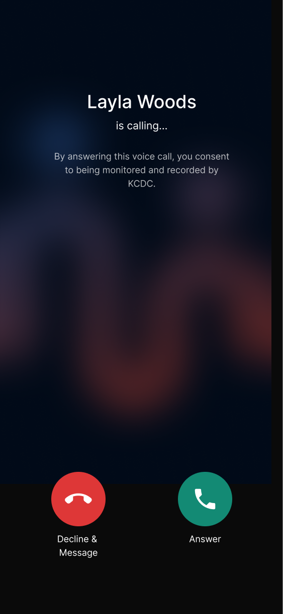
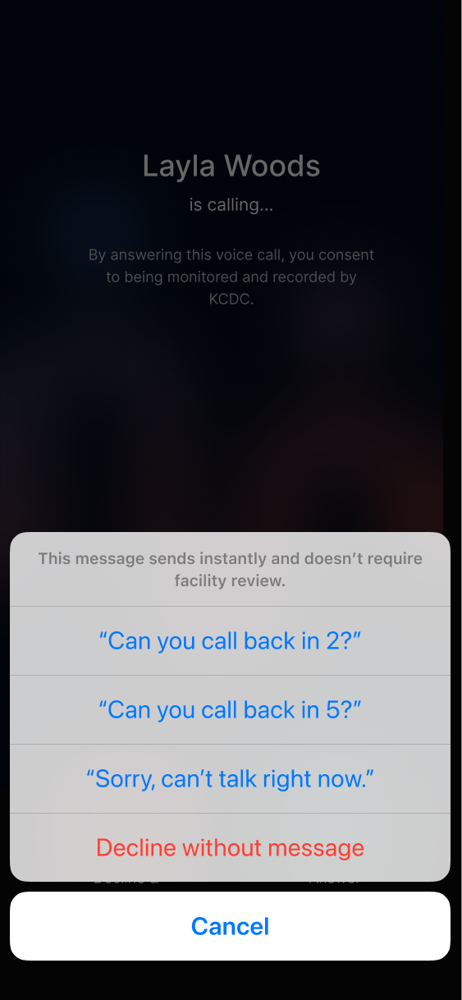
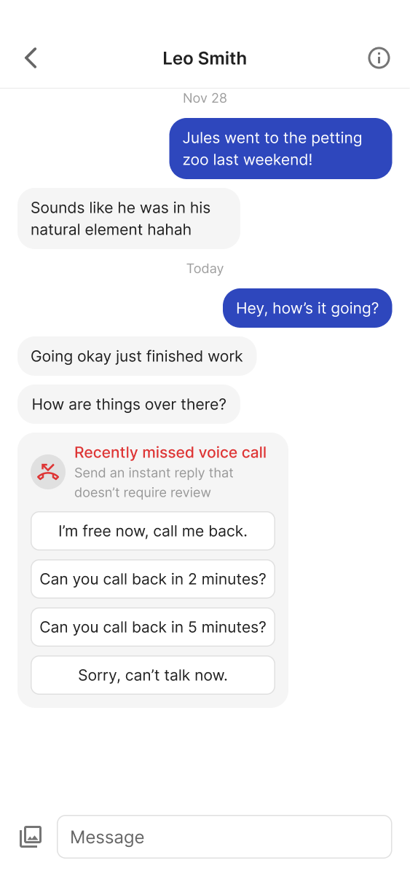
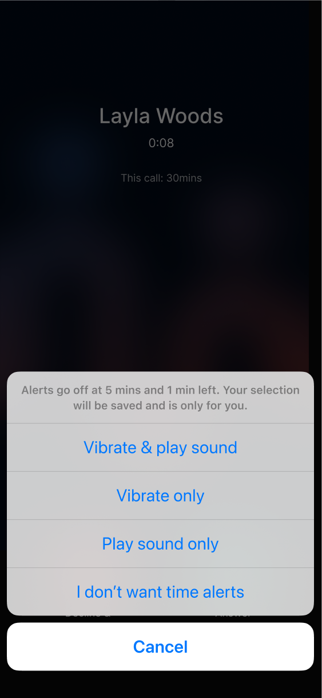
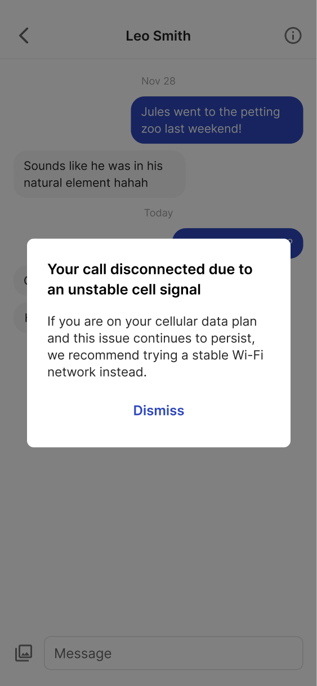
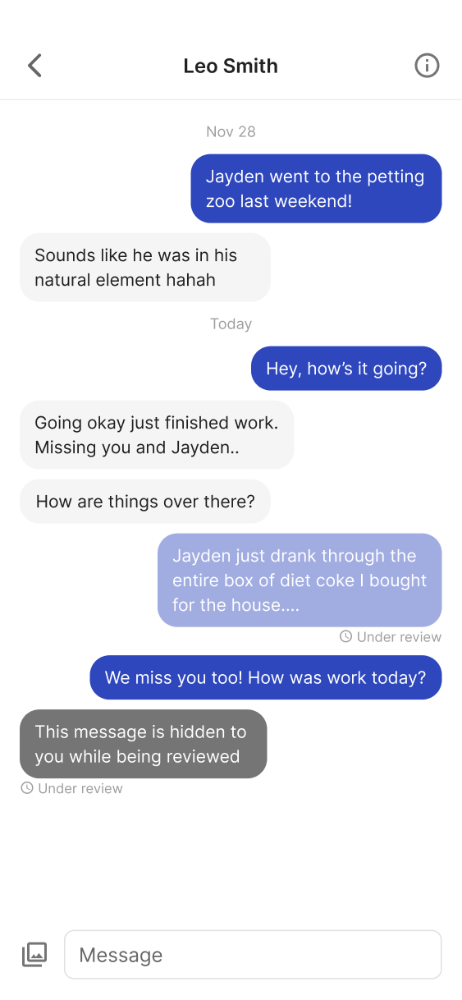
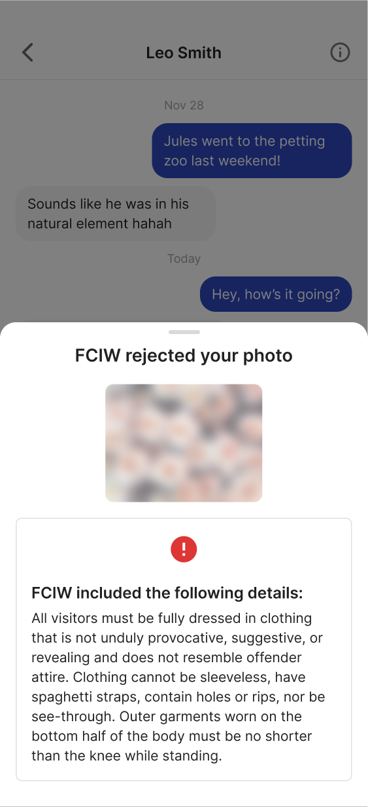
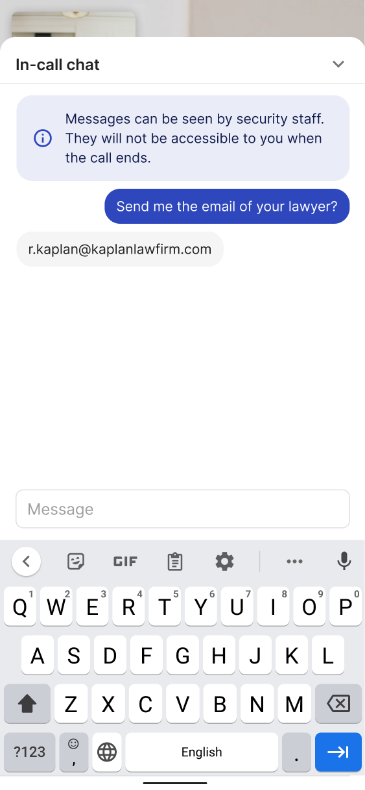

Ameelio is a technology nonprofit pushing for a more humane and rehabilitative corrections system by improving communication channels between incarcerated individuals and their support networks. This access plays a crucial role in lowering recidivism rates.
After launching Ameelio Mail, a platform that helped families send letters to incarcerated loved ones, we wanted to create an experience to mirror how families stay in touch in the free world. I led the ground-up UX design for Ameelio Connect, a mobile and web app for messaging, voice, and video calls. Navigating strict Department of Corrections (DOC) regulations, I led user research and design efforts to make the experience feel more human and less punitive. I collaborated closely with engineers and our Principal Product Designer to create an interface that was both accessible for users with low digital literacy and modern enough to ease the transition to everyday digital communication. These are a few of the features and design principles I'm proud of.
Calls from prison are one-way, which means only the incarcerated person can initiate them. But families juggling work, caregiving, and household responsibilities often miss these calls. Because some DOCs mandate message delays for security review, not all families can respond in time to coordinate a callback. Real-world connection becomes nearly impossible in those fleeting moments, with no way of knowing if or when the next chance will come.
I designed, tested, and advocated for a feature that allows families to send a quick, DOC-approved reply immediately after a missed call, bypassing the standard message review delay. Qualitative feedback showed that it reduced the frustration of missed calls, making them feel less like missed opportunities. By incorporating familiar, free-world UX elements, the design helped make the communication experience feel more natural, less restrictive, and more in line with everyday family interactions.



quick reply flow
For-profit prison communication platforms have historically prioritized Department needs over the user experience of incarcerated people. In practice that means incarcerated people and their families are often left in the dark about whether a message was delivered or why a call dropped. This lack of transparency adds emotional strain to an already fragile lifeline, turning treasured opportunities for connection into another source of worry.
I designed and tested clear message statuses, call timer alerts, and respectful language to help people better understand the system and focus on what matters most: staying connected.



message statuses, call time alerts, and call failure modal
An ongoing challenge of DOC security constraints was maintaining Ameelio's reputation as a trusted, good-faith platform. Our user base is naturally skeptical of both hyper-vigilant prison systems and profit-driven third-party services, requiring us to continuously emphasize that Ameelio is for people, not for profit.
I identified key moments in the UX where communication monitoring occurs and designed unobtrusive cues to indicate that oversight is conducted by the DOC, not Ameelio. This transparency, paired with a clean and modern interface, helped reduce perceived surveillance from Ameelio.


DOCs can reject photos sent, as well as monitor voice calls and video chat messages
Ameelio Connect has become a core communication tool for families navigating incarceration, supporting over 150,000 users across Colorado, Iowa, Maine, Massachusetts, and even Pakistan. Since launch, the platform has facilitated more than 3 million minutes of free calls and video chats, along with hundreds of thousands of messages and visit requests. By eliminating per-minute fees, Ameelio has saved families an estimated $2.5 million in communication costs to date.